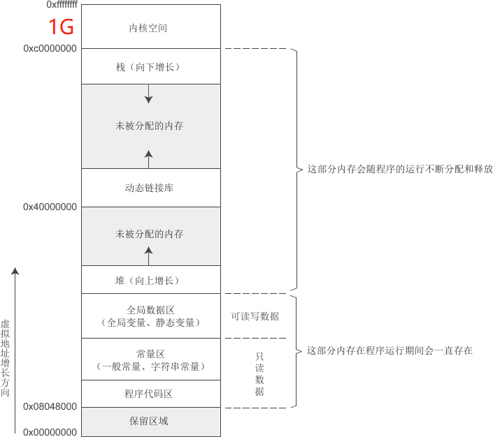
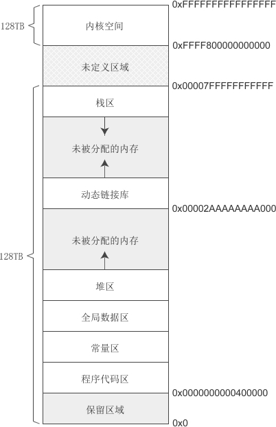

【本文结构】
- 7、Linux下C语言的内存模型
- 8、Windows下C语言的内存模型
- 9、用户模式和内核模式
- 10、栈（Stack）和栈溢出
- 11、栈帧/活动记录
- 12、函数调用惯例
- 13、一个实例深入剖析函数进栈出栈的过程
- 14、栈溢出攻击
- 内存模型（Memory Model）
- 程序内存在地址空间中的分布情况称为内存模型（Memory Model）。内存模型由操作系统构建，在Linux和Windows下有所差异，并且会受到编译模式的影响，本节我们讲解Linux下32位环境和64位环境的内存模型。
- 虚拟地址空间在32位环境下的大小为 4GB，在64位环境下的大小为 256TB。
- 内核空间和用户空间
- 以32位环境为例，理论上程序可以拥有 4GB 的虚拟地址空间，我们在C语言中使用到的变量、函数、字符串等都会对应内存中的一块区域。
- 但是，在这 4GB 的地址空间中，要拿出一部分给操作系统内核使用，应用程序无法直接访问这一段内存，这一部分内存地址被称为内核空间（Kernel Space）。
- Windows 在默认情况下会将高地址的 2GB 空间分配给内核（也可以配置为1GB），
- Linux 默认情况下会将高地址的 1GB 空间分配给内核。
- 也就是说，应用程序只能使用剩下的 2GB 或 3GB 的地址空间，称为用户空间（User Space）。
- Linux下32位环境的用户空间内存分布情况
- 在32位环境下，虚拟地址空间大小为 4G，Linux 将高 1G 的空间分配给内核使用，而将低 3G 的空间分配给用户程序使用。
- 我们暂时不关心内核空间的内存分布情况，下图是Linux下32位环境的一种经典内存模型：


- 程序代码区和静态数据区在程序加载到内存后就分配好了，并且在程序运行期间一直存在，不能销毁也不能增加 （大小已被固定），只能等到程序运行结束后由操作系统收回，所以全局变量、字符串常量等在程序的任何地方都能访问，因为它们的内存一直都在。
- 栈： 函数被调用时，会将参数、局部变量、返回地址等与函数相关的信息压入栈中，函数执行结束后，这些信息都将被销毁。所以局部变量、参数只在当前函数中有效，不能传递到函数外部，因为它们的内存不在了。
- 堆（Heap）：这是 程序员唯一能控制的内存区域。
- 在这片空间中，程序可以申请一块内存，并自由地使用（放入任何数据）。
- 堆内存在程序主动释放之前会一直存在，不随函数的结束而失效。在函数内部产生的数据只要放到堆中，就可以在函数外部使用。
- 常量区、全局数据区、栈上的内存由系统自动分配和释放，不能由程序员控制。

- Linux下64位环境的用户空间内存分布情况
- 在64位环境下，虚拟地址空间大小为 256TB，Linux 将高 128TB 的空间分配给内核使用，而将低 128TB 的空间分配给用户程序使用。如下图所示：

- 在64位环境下，虚拟地址虽然占用64位，但只有最低48位有效。这里需要补充的一点是，任何虚拟地址的48位至63位必须与47位一致。
- 上图中，用户空间地址的47位是0，所以高16位也是0，换算成十六进制形式，最高的四个数都是0；内核空间地址的47位是1，所以高16位也是1，换算成十六进制形式，最高的四个数都是1。
- 这样中间的一部分地址正好空出来，也就是图中的“未定义区域”，这部分内存无论如何也访问不到。
- 不像 Linux，Windows 是闭源的，有版权保护，资料较少，不好深入研究每一个细节，至今仍有一些内部原理不被大家知晓。关于 Windows 地址空间的内存分布，官网上只给出了简单的说明：
- 对于32位程序，内核占用较高的 2GB，剩下的 2GB 分配给用户程序；
- 对于64位程序，内核占用最高的 248TB，用户程序占用最低的 8TB。
- （内存模型图见原网站）
- 我们知道，每个线程的栈都是独立的，所以一个进程中有多少个线程，就有多少个对应的栈，对于 Windows 来说，每个线程默认的栈大小是 1MB。
- 在分配完上面这些地址以后，Windows 的地址空间已经是支离破碎了。当程序向系统申请堆空间时，只好从这些剩下的还有没被占用的地址上分配。
- 进程（Process）
- 简单来说，一个可执行程序就是一个进程，前面我们使用C语言编译生成的程序，运行后就是一个进程。进程最显著的特点就是拥有独立的地址空间。
- 程序是一个静态的概念，进程是一个动态的概念。
- 严格来说，程序是存储在磁盘上的一个文件，是指令和数据的集合，是一个静态的概念；进程是程序加载到内存运行后一些列的活动，是一个动态的概念。
- 前面我们在讲解地址空间时，一直说“程序的地址空间”，这其实是不严谨的，应该说“进程的地址空间”。一个进程对应一个地址空间，而一个程序可能会创建多个进程。
- 系统调用（System Call）
- 用户程序调用系统 API 函数称为系统调用。
- 内核空间存放的是操作系统内核代码和数据，是被所有程序共享的，在程序中修改内核空间中的数据不仅会影响操作系统本身的稳定性，还会影响其他程序，这是非常危险的行为，所以操作系统禁止用户程序直接访问内核空间。
- 要想访问内核空间，必须借助操作系统提供的 API 函数，执行内核提供的代码，让内核自己来访问，这样才能保证内核空间的数据不会被随意修改，才能保证操作系统本身和其他程序的稳定性。
- 内核模式和用户模式
- 内核模式（Kernel Mode）
- 发生系统调用时会暂停用户程序，转而执行内核代码（内核也是程序），访问内核空间，这称为内核模式。
- 用户模式（User Mode）
- 用户空间保存的是应用程序的代码和数据，是程序私有的，其他程序一般无法访问。当执行应用程序自己的代码时，称为用户模式。
- 计算机会经常在内核模式和用户模式之间切换：
- 当运行在用户模式的应用程序需要输入输出、申请内存等比较底层的操作时，就必须调用操作系统提供的 API 函数，从而进入内核模式；
- 操作完成后，继续执行应用程序的代码，就又回到了用户模式。
- 总结：用户模式就是执行应用程序代码，访问用户空间；内核模式就是执行内核代码，访问内核空间（当然也有权限访问用户空间）。
- 为什么要区分两种模式？
- 内核最主要的任务是管理硬件，包括显示器、键盘、鼠标、内存、硬盘等，并且内核也提供了接口（也就是函数），供上层程序使用。当程序要进行输入输出、分配内存、响应鼠标等与硬件有关的操作时，必须要使用内核提供的接口。但是用户程序是非常不安全的，内核对用户程序也是充分不信任的，当程序调用内核接口时，内核要做各种校验，以防止出错。
- 从 Intel 80386 开始，出于安全性和稳定性的考虑，CPU 可以运行在 ring0 ~ ring3 四个不同的权限级别，也对数据提供相应的四个保护级别。
- 不过 Linux 和 Windows 只利用了其中的两个运行级别：
- 一个是内核模式，对应 ring0 级，操作系统的核心部分和设备驱动都运行在该模式下。
- 另一个是用户模式，对应 ring3 级，操作系统的用户接口部分（例如 Windows API）以及所有的用户程序都运行在该级别。
- 为什么内核和用户程序要共享地址空间？
- 既然内核也是一个应用程序，为何不让它拥有独立的4GB地址空间，而是要和用户程序共享、占用有限的内存呢？
- 让内核拥有完全独立的地址空间，就是让内核处于一个独立的进程中，这样每次进行系统调用都需要切换进程。切换进程的消耗是巨大的，不仅需要寄存器进栈出栈，还会使CPU中的数据缓存失效、MMU中的页表缓存失效，这将导致内存的访问在一段时间内相当低效。
- 而让内核和用户程序共享地址空间，发生系统调用时进行的是模式切换，模式切换仅仅需要寄存器进栈出栈，不会导致缓存失效；现代CPU也都提供了快速进出内核模式的指令，与进程切换比起来，效率大大提高了。
- 栈（Stack）
- 是程序（进程）的虚拟地址空间中地址较高的一个区域。栈可以存放函数参数、局部变量、局部数组等作用范围在函数内部的数据，它的用途就是完成函数的调用。
- 先进后出（First In Last Out）原则： 栈可以理解为一个特殊的容器，用户可以将数据依次放入栈中， 放入的数据最后才能取出，而最后放入的数据必须先取出。
- 栈是一段连续的内存，需要同时记录栈底和栈顶，才能对当前的栈进行定位。
- 在现代计算机中，通常使用ebp寄存器指向栈底，而使用esp寄存器指向栈顶。
- ebp 和 esp 都是CPU中的寄存器：
- ebp 是 Extend Base Pointer 的缩写，通常用来指向栈底；
- esp 是 Extend Stack Pointer 的缩写，通常用来指向栈顶。
- 提示：栈也经常被称为堆栈，而堆依然称为堆，所以堆栈这个概念并不包含堆，大家要注意区分。
- 栈内存由系统自动分配和释放：发生函数调用时就为函数运行时用到的数据分配内存，函数调用结束后就将之前分配的内存全部销毁。所以局部变量、参数只在当前函数中有效，不能传递到函数外部。
- 栈的大小及溢出
- 对每个程序来说，栈能使用的内存是有限的，一般是 1M~8M，这在编译时就已经决定了，程序运行期间不能再改变。
- 一个程序可以包含多个线程，每个线程都有自己的栈，严格来说，栈的最大值是针对线程来说的，而不是针对程序。
- 栈内存的大小和编译器有关，编译器会为栈内存指定一个最大值，
- 在 VC/VS 下，默认是 1M，
- 在 C-Free 下，默认是 2M，
- 在 Linux GCC 下，默认是 8M。
- 当然，我们也可以通过参数来修改栈内存的大小。
- 栈溢出（Stack Overflow）： 如果程序使用的栈内存超出最大值，就会发生栈溢出 错误。


- 栈帧（Stack Frame）/ 活动记录（Activate Record）
- 函数的调用和栈是分不开的，没有栈就没有函数调用。
- 当发生函数调用时，会将函数运行需要的信息全部压入栈中，这常常被称为栈帧或活动记录。（个人觉得 activate record 翻译为 “激活记录”比较适合）
- 活动记录一般包括以下几个方面的内容：
- 函数的返回地址，也就是函数执行完成后从哪里开始继续执行后面的代码。
- 注意：C语言代码最终会被编译为机器指令，确切地说，返回地址是下一条机器指令的地址，这里说成是下一条C语言语句的地址，仅仅是为了更加直观地说明问题。
- 参数和局部变量。
- 有些编译器，或者编译器在开启优化选项的情况下， 会通过寄存器来传递参数，而不是将参数压入栈中，我们暂时不考虑这种情况。
- 编译器自动生成的临时数据。
- 例如，当函数返回值的长度较大（比如占用40个字节）时，会先将返回值压入栈中，然后再交给函数调用者。
- 当返回值的长度较小（char、int、long 等）时，不会被压入栈中，而是先将返回值放入寄存器，再传递给函数调用者。
- 一些需要保存的寄存器，例如 ebp、ebx、esi、edi 等。
- 之所以要保存寄存器的值，是为了在函数退出时能够恢复到函数调用之前的场景，继续执行上层函数。
- 当发生函数调用时：
- 实参、返回地址、ebp 寄存器首先入栈；
- 然后再分配一块内存供局部变量、返回值等使用，这块内存一般比较大，足以容纳所有数据，并且会有冗余；
- 最后将其他寄存器的值压入栈中。
- 需要注意的是，不同编译器在不同编译模式下所产生的函数栈并不完全相同，例如在VS2010下选择Release模式，编译器会进行大量优化，函数栈的样貌荡然无存，不具有教学意义，所以本教程以VS2010 Debug模式为例进行分析。
- 关于栈内数据的定位
- 由于 esp 的值会随着数据的入栈而不断变化，要想根据 esp 找到参数、局部变量等数据是比较困难的，所以在实现上是根据 ebp 来定位栈内数据的。
- ebp 的值是固定的，数据相对 ebp 的偏移也是固定的，ebp 的值加上偏移量就是数据的地址。
- 一个C程序由若干个函数组成，C程序的执行实际上就是函数之间的相互调用。
- 所举的程序例子中，main() 调用了 funcB()，funcB() 又调用了 funcA()。
- 对于main() 调用 funcB()，我们称 main() 是调用方，funcB() 是被调用方；
- 调用惯例（Calling Convention）： 函数调用方和被调用方必须遵守同样的约定，理解要一致， 这称为调用惯例。
- 一个调用惯例一般规定以下两方面的内容：
- 函数参数的传递方式，是通过栈传递还是通过寄存器传递（这里我们只讲解通过栈传递的情况）。
- 函数参数的传递顺序，是从左到右入栈还是从右到左入栈。
- 参数弹出方式。函数调用结束后需要将压入栈中的参数全部弹出，以使得栈在函数调用前后保持一致。这个弹出的工作可以由调用方来完成，也可以由被调用方来完成。
- 函数名修饰方式。函数名在编译时会被修改，调用惯例可以决定如何修改函数名。
- 函数调用惯例在函数声明和函数定义时都可以指定，语法格式为：
- 在函数声明处是为调用方指定调用惯例，
- 在函数定义处是为被调用方（也就是函数本身）指定调用惯例。
返回值类型 调用惯例 函数名(函数参数)
- 在C语言中，存在多种调用惯例，如下：
调用惯例 | 参数传递方式 | 参数出栈方式 | 名字修饰 |
cdecl | 按照从右到左的顺序入栈 | 调用方 | 下划线+函数名 如：函数 max() 的修饰名为 _max |
stdcall | 按照从右到左的顺序入栈 | 函数本身（被调用方） | 下划线+函数名+@+参数的字节数 如函数 int max(int m, int n) 的修饰名为 _max_@8 |
| fastcall | 将部分参数放入寄存器， 剩下的参数按照从右到左的顺序入栈 | 函数本身（被调用方） | @+函数名+@+参数的字节数 |
pascal | 按照从左到右的顺序入栈 | 函数本身（被调用方） | 较为复杂，这里不再展开讨论 |
- 一个例子：
- __cdecl 是C语言默认的调用惯例，在平时编程中，我们其实很少去指定调用惯例，这个时候就使用默认的 __cdecl。
- 注意：__cdecl 并不是标准关键字，下面的写法在 VC/VS 下有效，但是在 GCC 下，要使用 __attribute__((cdecl))。

【13 一个实例深入剖析函数进栈出栈的过程】
- 函数进栈
- 可以发现，在函数的实际调用过程中，形参是不存在的，不会占用内存空间，内存中只有实参，而且是在执行函数体代码之前、由调用方压入栈中的。
- 为什么要留出这么多的空白，岂不是浪费内存吗？
- 这是因为我们使用Debug模式生成程序，留出多余的内存，方便加入调试信息；以Release模式生成程序时，内存将会变得更加紧凑，空白也被消除。
- 未初始化的局部变量的值为什么是垃圾值？
- 为局部变量分配内存时，仅仅是将 esp 的值减去一个整数，预留出足够的空白内存，不同的编译器在不同的模式下会对这片空白内存进行不同的处理，可能会初始化为一个固定的值，也可能不进行初始化。
- 例如在VS2010 Debug模式下，会将预留出来的内存初始化为 0XCCCCCCCC，如果不对局部变量赋值，它们的内存就不会改变，输出时的结果就是 0XCCCCCCCC。
- 虽然编译器对空白内存进行了初始化，但这个值对我们来说一般没有意义，所以我们可以认为它是垃圾值、是随机的。
- 函数出栈
- 遗留的错误认知
- 经过上面的分析可以发现，函数出栈只是在增加 esp 寄存器的值，使它指向上一个数据，并没有销毁之前的数据。前面我们讲局部变量在函数运行结束后立即被销毁其实是错误的，这只是为了让大家更容易理解，对局部变量的作用范围有一个清晰的认识。
- 栈上的数据只有在后续函数继续入栈时才能被覆盖掉，这就意味着，只要时机合适，在函数外部依然能够取得局部变量的值。
- 局部数组溢出：C语言不会对数组溢出做检测，这是一个典型的由于数组溢出导致覆盖了函数返回地址的例子，我们将这样的错误称为“栈溢出错误”。
- 局部数组在栈上分配内存，并且不对数组溢出做检测，这是导致栈溢出的根源。
- 除了上面讲到的 gets() 函数，strcpy()、scanf() 等能够向数组写入数据的函数都有导致栈溢出的风险。
- 栈溢出一般不会产生严重的后果，但是如果有用户精心构造栈溢出，让返回地址指向恶意代码，那就比较危险了，这就是常说的栈溢出攻击。